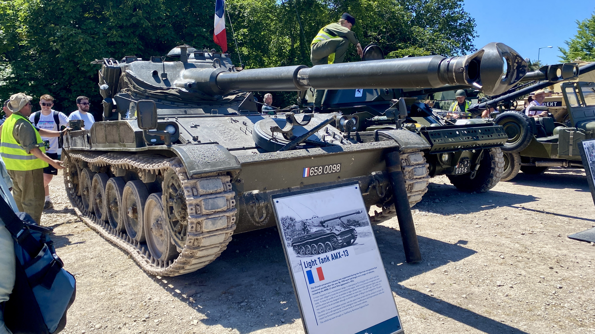
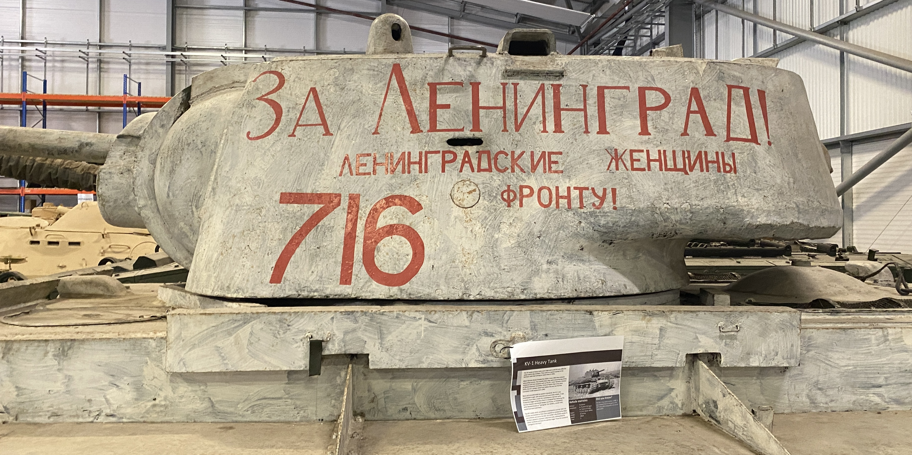
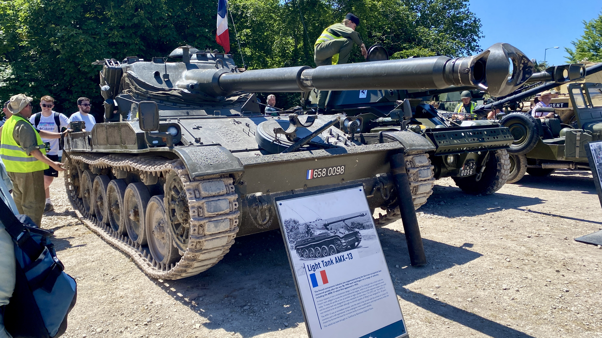
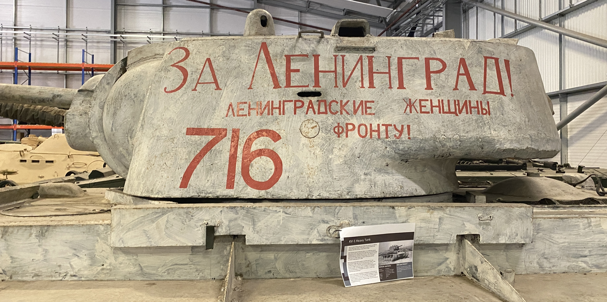

England
From Tower Hamlets to Bournemouth
 Located in East London just north of the Thames, Tower Hamlets blends modern urban
living with historical significance, creating a dynamic and culturally rich area.
A 3.5 hour train journey southwest of London lies Bovington, which hosts the largest tank museum in Europe.
Coincidentally, I arrived on the weekend of their annual festival, Tankfest.
Located in East London just north of the Thames, Tower Hamlets blends modern urban
living with historical significance, creating a dynamic and culturally rich area.
A 3.5 hour train journey southwest of London lies Bovington, which hosts the largest tank museum in Europe.
Coincidentally, I arrived on the weekend of their annual festival, Tankfest.
 

Standing tall above the English Channel lies Dover, a port town with uniqely bright cliffs. Created from millions of years of limestone formation from the sea floor, exposed after sea levels receded.


Standing tall above the English Channel lies Dover, a port town with uniqely bright cliffs. Created from millions of years of limestone formation from the sea floor, exposed after sea levels receded.

 Follow along with my journey, across the channel into France
Follow along with my journey, across the channel into France